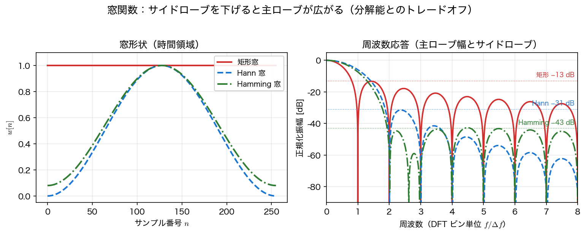
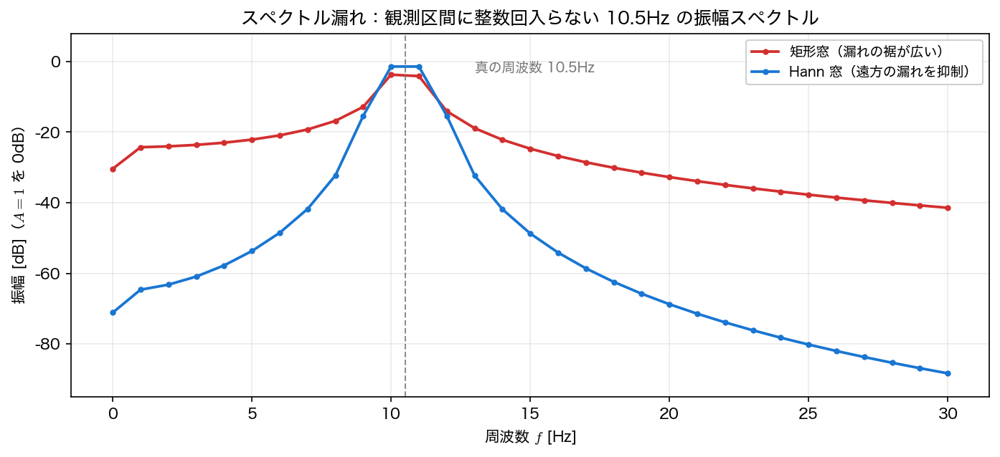

パワースペクトルと窓関数
第3回では FFT で 振幅スペクトル を求めた。本ページでは、まず電力に着目した パワースペクトル を導入し、続いて有限長観測がもたらす スペクトル漏れ（リーケージ） と、その緩和策である 窓関数 を扱う。
振幅スペクトルからパワースペクトルへ
振幅スペクトル \(\lvert X_k\rvert\) は各周波数成分の「大きさ」を表すが、信号の 電力（パワー） に着目したいことが多い。電力は振幅の2乗に比例するので、
を考える。とくに信号を確率的（雑音を含む）とみなすときは、単位周波数あたりの電力 ＝ パワースペクトル密度（PSD, Power Spectral Density） を使う。有限長の記録から実際に計算するのは、その 推定値
である（片側にまとめるため \(\pm f\) の2成分を足して2倍する。ただし対になる負周波数をもたない直流とナイキストは除く。\(N\) が奇数ならナイキストのビンは存在しない）。単位は \([\text{V}^2/\text{Hz}]\) である。後で見るように、これを全周波数で足し上げると信号の 平均電力 \(\overline{x^2}\) に等しくなる（パーセバルの定理）。
「推定値」と書いたわけ
上の \(\hat S_{xx}\) は、矩形窓で切り取った有限記録から作った 片側ピリオドグラム であって、真の PSD そのものではない。確率過程の真の PSD は、定常性を仮定したうえで 自己相関関数 \(R_{xx}(\tau)=E[x(t)x(t+\tau)]\) のフーリエ変換 として定義される（Wiener–Khinchin の定理）。\(\hat S_{xx}\) はその推定量の 1 つにすぎず、次ページ で見るように 記録を長くしても分散が減らない という困った性質をもつ。以下、ハット付きは推定値、ハットなしは真の PSD の意味で使う。
エネルギーとパワー
第3回の エネルギースペクトル密度 \(\lvert F(\omega)\rvert^2\) は、矩形パルスのように \(\int\lvert f\rvert^2dt<\infty\) の エネルギー信号 向けの量だった。一方、正弦波や雑音のように永遠に続く信号は全エネルギーが無限大になるため、単位時間あたりの電力で測る。これが パワースペクトル密度 で、スペクトル解析の主役になる。
スペクトル漏れ（リーケージ）
第3回の最後に触れたとおり、信号の周期が観測区間に整数回入らない と、ピークが周囲ににじむ スペクトル漏れ（リーケージ） が起きる。原因は、FFT が有限区間を「いきなり切り取り」、それを 周期的に繰り返す とみなすことにある。周期が整数回入らないと、記録の端で波形が滑らかにつながらず（一般には値や傾き（微分）が不連続になる）、この つながりの悪さ が偽の周波数成分を生む。
どれくらい深刻かを、振幅 \(1\) の正弦波で確かめる。観測時間 \(T=1\) s（\(\Delta f=1\) Hz）に対し、周波数が \(10\) Hz と \(11\) Hz の DFT ビン中心のちょうど中間 にくる \(10.5\) Hz を測ってみる。この半ビンずれた位置が、ピーク振幅の落ち込み（スキャロッピング損失）が最も大きくなる標準的な最悪ケースである。
import numpy as np
fs, N = 1000.0, 1000 # T=1s → Δf=1Hz
t = np.arange(N) / fs
x = np.sin(2*np.pi*10.5*t) # 10.5Hz: 10Hz と 11Hz の真ん中（最悪ケース）
freq = np.fft.rfftfreq(N, 1/fs)
amp = 2 * np.abs(np.fft.rfft(x)) / N
print(f"ピーク振幅 = {amp.max():.4f} (真値 1.0)")
print(f"遠方(>3Hz離れ)への漏れ最大 = {amp[np.abs(freq-10.5)>3].max():.4f}")
ピーク振幅は真値 \(1.0\) から \(0.65\) へ 34.8% も低下し、エネルギーが遠くの周波数まで漏れている。整数回入る場合（例えば \(10\) Hz ちょうど）なら振幅は \(1.0\) ぴったりに出るので、これは純粋に「切り取り」が生む誤差である。
厳密な「最悪」は \(10.5\) Hz ちょうどではない
半ビンずれ（\(10.5\) Hz）は、孤立した複素正弦波に対する理論上の最悪位置である。この例のように 実正弦波（\(\pm f\) の 2 成分をもつ）を 有限長・特定の初期位相 で測る場合は、負周波数側の裾が干渉するぶんだけ最悪位置がわずかにずれる。実際 \(10\)–\(11\) Hz を細かく走査すると、ピーク振幅が最小になるのは \(10.5119\) Hz の \(0.63690\) で、\(10.5\) Hz の \(0.65213\) よりわずかに小さい。以下では「ほぼ最悪」の代表点として \(10.5\) Hz を使う。
片側振幅の \(2/N\) は DC とナイキストには掛けない
片側振幅スペクトル 2 * np.abs(np.fft.rfft(x)) / N の係数 \(2\) は、\(\pm f\) の 2 成分を片側にまとめるための補正である。直流成分（\(k=0\)）と、\(N\) が偶数のときのナイキスト成分（\(k=N/2\)）は対になる負周波数をもたないので \(2\) 倍してはならず、正しくは \(\lvert X_k\rvert/N\) とする（前掲の片側 PSD の場合分け \(1\,(k=0,N/2)\)／\(2\,(\text{その他})\) と同じ理由）。ここで扱うピーク（10.5Hz など）は DC でもナイキストでもないため一律 \(2\) 倍でも値は変わらないが、DC 近傍やナイキスト成分の振幅を読むときは注意する。
窓関数
漏れの原因が記録の端でのつながりの悪さ（値や傾きの不連続）なら、区間の端に向かって信号を小さくして（テーパして） から FFT すればよい。この重み付けの関数を 窓関数（window function） と呼ぶ。
| 窓 | \(w[n]\)（\(n=0,\dots,N-1\)） | 特徴 |
|---|---|---|
| 矩形窓 | \(1\) | 窓なし。主ローブ最も狭いが漏れ最大 |
| Hann 窓 | \(0.5\left(1-\cos\dfrac{2\pi n}{N}\right)\) | 漏れと分解能のバランスがよい定番 |
| Hamming 窓 | \(0.54-0.46\cos\dfrac{2\pi n}{N}\) | 第1サイドローブが最も低い |
分母が \(N\) か \(N-1\) か（周期窓と対称窓）
窓の定義には 2 つの流儀 がある。上表のように分母を \(N\) とするのが 周期窓（periodic）、\(N-1\) とするのが 対称窓（symmetric） である。前者は「長さ \(N\) の周期の 1 周期分」になっていて FFT と相性がよく、後者は左右対称で末端がぴったり \(0\) になるためフィルタ設計に向く。両者の差は \(O(1/N)\) で、\(N\) が大きければ実用上ほとんど変わらない。
scipy.signal.get_window(name, N)は既定で 周期窓（fftbins=True）。fftbins=Falseで対称窓。np.hanning(N)/np.hamming(N)は 対称窓。
\(N=2048\) の Hann 窓で比べると、周期窓はコヒーレントゲイン \(0.5000000\)・ENBW \(1.5000000\) bins ちょうどなのに対し、対称窓は \(0.4997559\)・\(1.5007328\) とわずかにずれる。スペクトル解析では周期窓を使う のが標準であり、以下の表の値もすべて周期窓のものである。
窓の性能は、その 周波数応答 の形（主ローブとサイドローブ）で決まる。下図のように、サイドローブを下げる（漏れを減らす）ほど主ローブが広がる（分解能が落ちる）という トレードオフ がある。

同じ \(10.5\) Hz の信号に Hann 窓をかけると、漏れが劇的に減る。
w = np.hanning(N) # 対称窓。周期窓との差は O(1/N) で無視できる
cg = w.sum() / N # コヒーレントゲイン ≈ 0.5
amp_w = 2 * np.abs(np.fft.rfft(x * w)) / N / cg # 振幅補正込み
print(f"Hann: ピーク振幅 {amp_w.max():.4f} 遠方漏れ {amp_w[np.abs(freq-10.5)>3].max():.4f}")
遠方への漏れは \(0.109\to 0.008\) へ 1桁以上 減った。ピーク振幅も \(0.65\to 0.85\) と真値に近づく（主ローブが広がったぶん、隣のビンにも分散して完全には \(1.0\) にならない）。

振幅補正（コヒーレントゲイン）
窓をかけると信号を平均的に小さくしてしまうので、振幅を正しく読むには補正が要る。窓の平均値
で割れば、正弦波のピーク振幅が復元される。Hann 窓ではこの値が \(0.5\) なので、振幅は \(2\) 倍 して補正する（上のコードの / cg）。
コヒーレントゲイン補正が効くのはビン中心の正弦波だけ
この補正は「窓が信号を平均的に \(\text{CG}\) 倍に縮める」ぶんを戻すもので、正弦波の周波数が DFT ビン中心にぴったり乗っているときに限り振幅が完全に復元される。実際、\(10\) Hz（ビン中心）の正弦波に Hann 窓をかけて補正すると振幅は \(1.000000\) になる。
一方、ビンからずれていると スキャロッピング損失 が残り、補正しても届かない。上で見たとおり \(10.5\) Hz では補正後も \(0.8491\) である（矩形窓の \(0.6521\) よりはずっとましだが \(1.0\) ではない）。ピーク振幅を正確に読みたいときは、ピーク近傍の複数ビンを合わせて使う（補間する）か、電力として ENBW で補正して読むほうが確実である。
import scipy.signal as ss
for name in ("boxcar", "hann", "hamming"):
w = ss.get_window(name, 2048) # 既定は周期窓
cg = w.mean() # コヒーレントゲイン
enbw = len(w) * (w**2).sum() / w.sum()**2 # 等価雑音帯域幅 [bins]
print(f"{name:8s}: コヒーレントゲイン {cg:.3f} ENBW {enbw:.3f} bins")
boxcar : コヒーレントゲイン 1.000 ENBW 1.000 bins
hann : コヒーレントゲイン 0.500 ENBW 1.500 bins
hamming : コヒーレントゲイン 0.540 ENBW 1.363 bins
等価雑音帯域幅（ENBW）
ENBW（Equivalent Noise BandWidth） は、窓が雑音を拾う「実効的なビン幅」を表す（矩形 \(1.0\)、Hann \(1.5\) bins）。上の式が返すのは ビン単位 の無次元量なので、実際の帯域幅［Hz］に直すには周波数刻みを掛けて
とする。1 ビンに入る雑音電力［\(\text{V}^2\)］は、PSD［\(\text{V}^2/\text{Hz}\)］にこの \(B_{\text{ENBW}}\) を掛けて得られる。
逆向きの補正も要る。窓をかけた \(\lvert X_k\rvert^2\) から PSD を作るときは、窓の電力 \(\sum w[n]^2\) で規格化しなければならない。scipy.signal.welch(..., scaling='density') はこの規格化を内部で済ませているので、その出力に さらに ENBW を掛けてはいけない。振幅（正弦波のピーク）はコヒーレントゲインで、雑音電力（PSD からの積分）は ENBW（を Hz に直したもの）で、と使い分ける。
まとめ
- パワースペクトル \(\lvert X_k\rvert^2\)、単位周波数あたりにした PSD \(S_{xx}\)。雑音を含む信号のスペクトルはこれで測る。
- 周期が観測区間に整数回入らないと スペクトル漏れ が起き、振幅さえ正しく読めない（10.5Hz で振幅が \(0.65\) に低下）。
- 窓関数 で両端をなめらかに落とすと漏れが減る。サイドローブを下げるほど主ローブが広がる トレードオフ（矩形 −13dB / Hann −31dB / Hamming −43dB）。
- 窓をかけたら コヒーレントゲイン（Hann \(=0.5\)）で振幅を、ENBW（Hann \(=1.5\) bins、Hz に直すには \(\Delta f\) 倍）で雑音電力を補正する。ただし振幅の補正が完全なのはビン中心の正弦波に限る。
次は、雑音を含む信号のスペクトルを安定に推定する ピリオドグラムとウェルチ法 に進む。